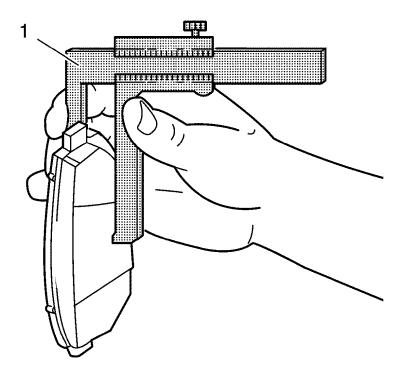

Revisión de la pastilla del freno
Herramientas especiales
CH-230-A Galga de disco
Si desea informarse sobre herramientas regionales equivalentes, consultar Herramientas especiales .
Advertencia: Consulte Advertencia relacionada con el polvo procedente de los frenos en la sección Prólogo.
- Desmonte las pastillas de freno. Consulte Sustitución de las pastillas de freno del disco delantero o Sustitución de pastillas de freno de disco trasero .

- Mida el espesor restante de las pastillas de freno en varios puntos, utilizando la galga de disco CH-230-A (1).
- Compare el espesor de las pastillas de freno con las especificaciones de los componentes del disco de freno.
| © Copyright Chevrolet. Reservados todos los derechos |